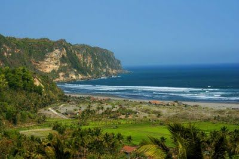
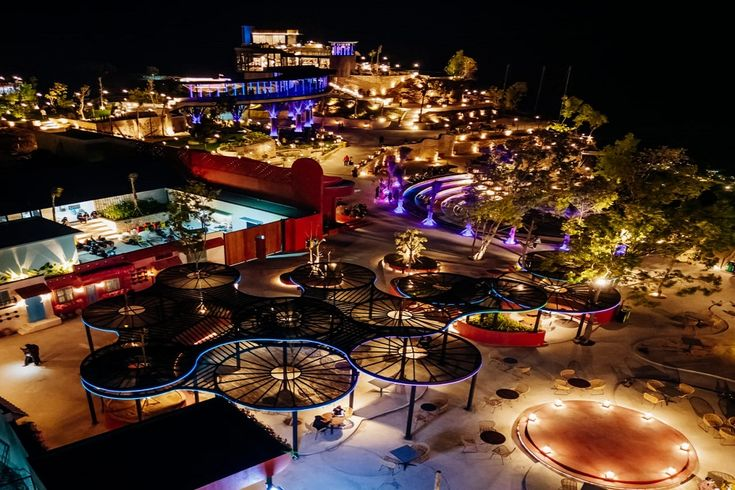

Destinasi Populer
Nikmati berbagai destinasi wisata terbaik yang menjadi ikon Daerah Istimewa Yogyakarta.

Candi Prambanan
Kompleks candi Hindu terbesar di Indonesia dengan arsitektur megah dan bersejarah.
Selengkapnya →


Pantai Parangtritis
Pantai eksotis dengan panorama matahari terbenam yang sangat memukau.
Selengkapnya →
Taman Sari
Bekas taman kerajaan Kesultanan Yogyakarta dengan arsitektur klasik yang indah.
Selengkapnya →
HeHa Sky View
Destinasi wisata modern dengan panorama Kota Yogyakarta yang indah terutama saat malam hari.
Selengkapnya →